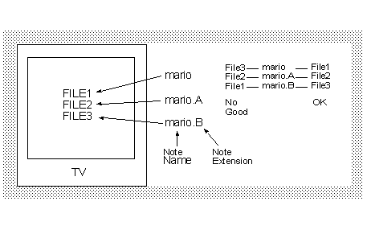

10-16 Multi-note Names and Data (Required)
Caution
When more than one set of data can be stored using multi-note, verify that the multi-note and data saved clearly correspond to one another.
Discussion
When a Controller Pak menu is used, the user can't recognize from the menu which note corresponds to which saved data.
For example:


© 1999 Nintendo of America Inc.
Release Date: March 1999